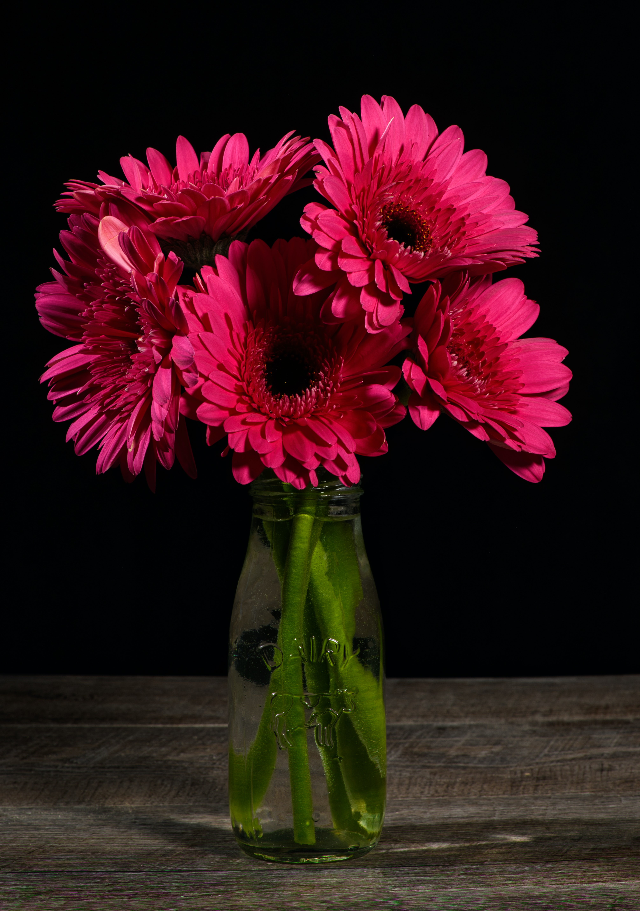

Sharing The Gift of Love with Flowers
Flowers have symbolized love and affection since before the Middle Ages. They are also associated with peace, purity, and prosperity in many cultures. With so much meaning behind them, it's no wonder that flowers continue to be one of the most popular gifts today.
Flower Blooming with Lots of Love
Flowers also might typically be considered as a symbol of love and care, but they can also convey many other emotions too: from joy, happiness, appreciation, and affection to sympathy, gratitude, or apology. Flowers can help us communicate our feelings to the ones we care about perfectly, in a way that no other object can